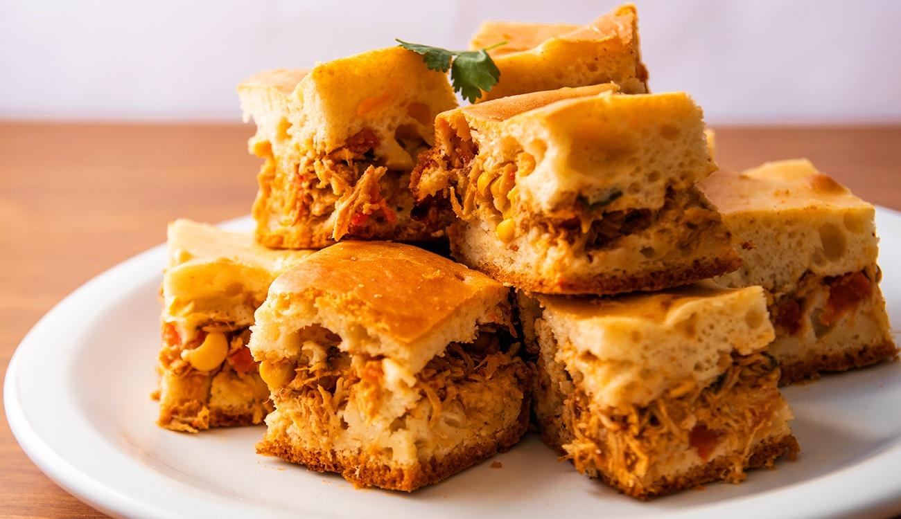
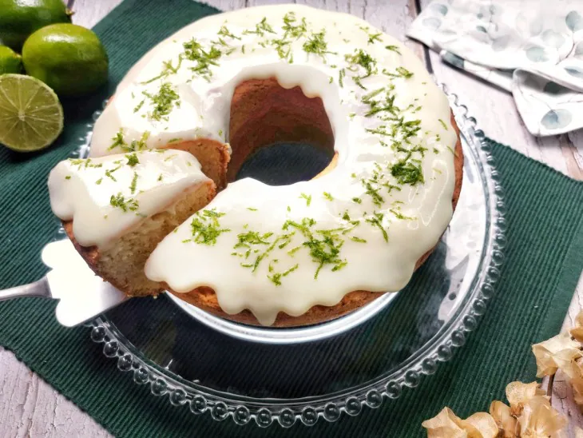

kakakakaka
- 1/2 xícara de chá de Amido de Milho Maizena Vita + 60 g - 2 colheres de chá de fermento em pó 8 g - 1 xícara de chá de açúcar 190 g
Modo de preparo
- Pré-aqueça o forno em temperatura média (180°C). - Unte e enfarinhe uma forma de furo central média (20 cm de diâmetro). Reserve. - No copo do liquidificador, coloque a cenoura, o óleo e os ovos, e bata até a massa do bolo de cenoura ficar homogênea. - Em uma tigela, peneire o amido de milho MAIZENA, a farinha de trigo, o fermento e o açúcar, junte a mistura de cenoura reservada, e mexa com o auxílio de uma espátula até que vire uma massa uniforme. - Disponha a massa na forma reservada e leve ao forno por 40 minutos, ou até que um palito, depois de espetado na massa, saia limpo. Retire o forno e deixe amornar.*****************************************************************************************************************************************************************************************************************************
Torta salgada de frango

Massa
1 xícara de farinha de trigo sem fermento 1 xícara de leite 1/2 xícara de óleo ou azeite 2 ovos inteiros 2 colheres de sopa de queijo ralado 1/2 tablete de caldo de carne ou de frango 1 colher (sopa) de fermento em póRecheio
1/2 kg de peito de frango cozido e desfiado 1/2 lata de milho verde 1/2 lata de ervilha 1/2 lata de azeitonas 1/2 cebola picadinha 1/2 tomate grande 300 g de queijo mussarela (opcional) 2 dentes de alho coentro opcional margarina creme de leite 1 creme de leite (opcional)Modo de preparo
1- Junte o leite, farinha de trigo, ovos, queijo ralado, óleo e o caldo no liquidificador, bata por 3 minutos. 2- Depois de bater coloque o fermento em pó e bata mais um pouquinho. 3- Recheio: Coloque na panela o alho amassado, a cebola e a margarina. 4- Refogue e em seguida coloque o frango desfiado. 5- Desligue o fogo e coloque os ingredientes. 6- Polvilhe a forma com margarina e farinha, e em seguida coloque metade da massa, o recheio, por cima o queijo mussarela e coloque o resto dos ingredientes. 7- Leve ao forno médio por 25 a 30 minutos.**************************************************************************************************************************************************************************
Bolo de limão
Massa
2 ovos (claras em neve) 1 e 1/2 xícara de açucar 3 colheres (sopa) margarina suco de 1 ou 2 limões (depende do tamano) raspas de limão 3 e ¹/2 xícaras de farinha de trigo 1 xícara de leite 2 colheres (sopa) fermento em póCobertura
2/3 lata de leite condensado raspas da casca de 1 limão pequeno suco de 1/2 limãoModo de preparo
1- Bater no liquidificador as gemas, o açúcar e margarina. 2- Em seguida juntar o suco e raspas limão, o leite e farinha aos poucos. 3- Por último misturar, delicadamente, as claras em neve e o fermento. 4- Espalhar a massa em uma assadeira retangular média já untada e assar no forno (já preaquecido) por mais ou menos 40 minutos em temperatura de 180ºC. 5- Cobertura Misturar tudo em uma panela pequena e levar ao fogo mexendo sempre até levantar fervura.